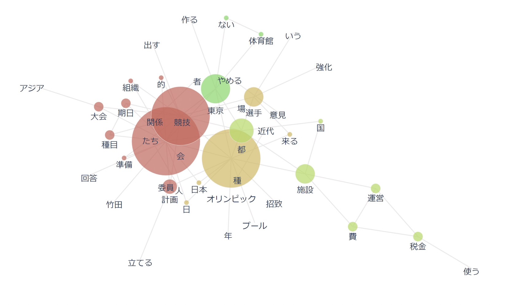
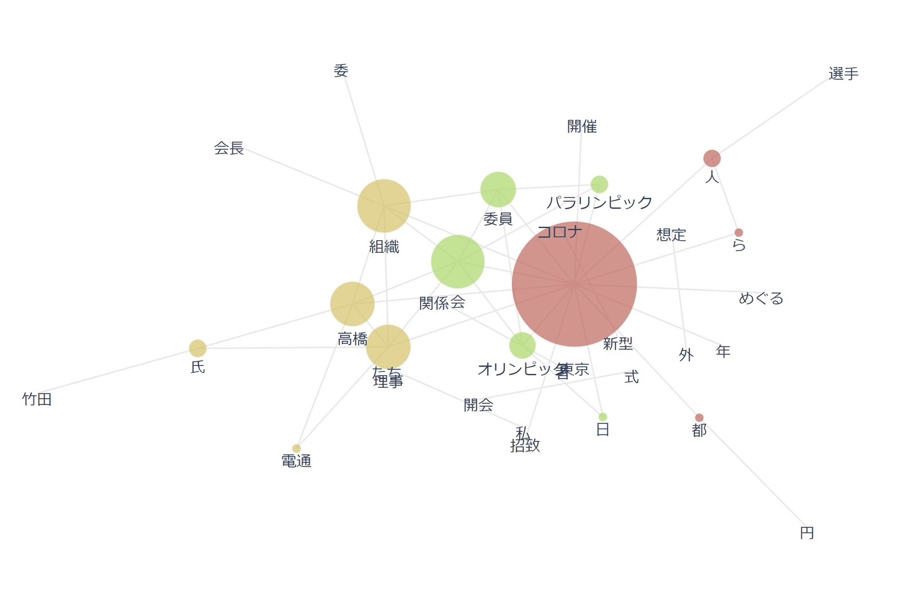

共起ネットワーク
1964東京五輪共起ネットワーク図

1964は大会進行に直接かかわる期日や種目、準備等と、
大会を開くにあたり付随してくる費用、税金、意見、国等の現実的なものに大きく分かれていた。
2020東京五輪共起ネットワーク図

2020は大会に対してダイレクトに繋がることではなく、組織政治やコロナのふたつの言葉が多数であった。
二つの比較
十分な根拠があるわけではないが、二つの図で中心になっている言葉を比べると、
64年とは比べ物にならないほど情報が広がりやすくなった今、不祥事などが発覚するとそれに関する話題が溢れかえりやすくなったと思われる。
2020は五輪に関する具体的内容が少ない要因として、64年より国民の関心が薄れているか、コロナと収賄があまりにインパクトが大きすぎるかの二択が浮上する。
この二つの図を出すにあたり情報を集める段階で選択バイアスが強く働いた可能性があるため上記の内容が一概に正しいとは言えない。